Orca: The World is in Your Mind
June 25, 2026
1. Learning the World
Why: World Models Should Predict States
Existing next prediction paradigms have achieved impressive results in their own domains. Next token prediction brings strong language capabilities, Next frame prediction enables high-quality image and video generation, and Next action prediction supports embodied policy learning. However, when the objective is mainly tied to a single output interface, models may still generate results that look locally plausible but globally counterintuitive: text may describe physically impossible events, videos may break object permanence, contact, or motion consistency, and actions may resemble demonstrations without modeling how the world changes afterward.
We argue that a key step toward general intelligence is to build a model that can continuously learn from and adapt to the world like humans do. Such a model should absorb multimodal world signals, from vision, text, audio, action, and touch to physical signals such as force and light, and even broader scientific observations, then organize world states and their transitions in a latent space. The learned world latent can serve as a unified interface for downstream generation and decision-making across modalities.
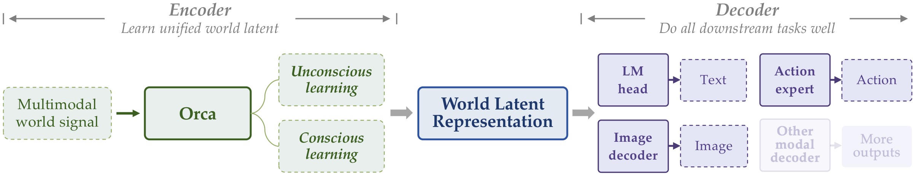
Orca therefore shifts the modeling target from predicting the next token, frame, or action to predicting the next state. Multimodal signals provide observation; state-transition modeling supports reasoning; the learned world latent carries cognition; and language, vision, and action serve as different readouts of the same latent world state, enabling the model to understand, predict, and change the world in a more consistent way.
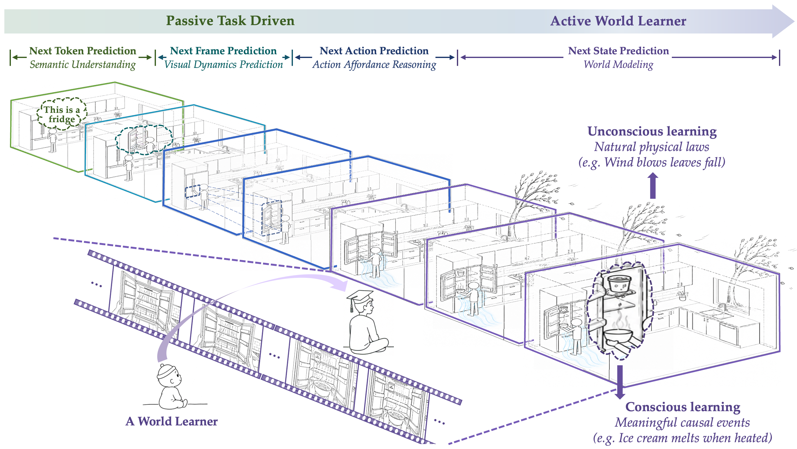
Core formulation: latent world-state modeling
Orca formulates world learning as latent world-state modeling, including state abstraction from multimodal world signals and state transition. Given world signals X = {Xm}m∈M, where M can encompass language, vision, audio, force, light, and even signals beyond human perception such as infrared radiation, Orca maps these signals to a latent world state S = fθ(X).
Here, zt captures implicit dynamics, ct specifies explicit conditions, and Δ determines whether Orca predicts future states or backtracks to earlier states.
How: conscious and unconscious learning
How can a model learn the next state of the world? A useful reference is how infants learn before they acquire language. Through unconscious learning, they observe the objective world directly: how objects move, how contact happens, whether occluded objects still exist, and how scenes change after actions. This learning does not rely on explicit labels; it comes from dense observation of continuous events themselves.
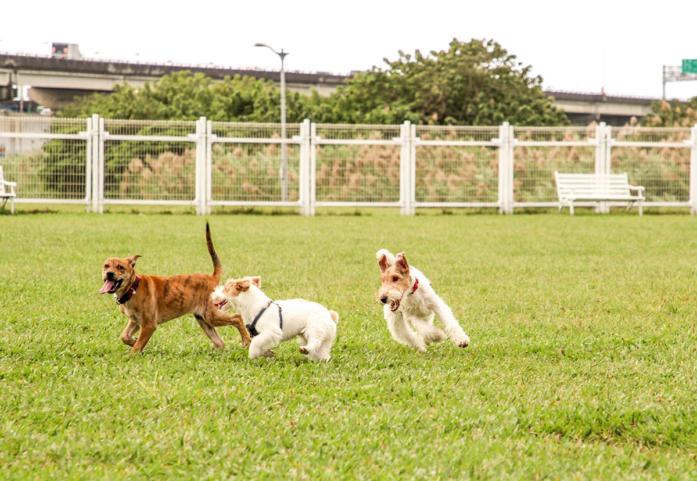
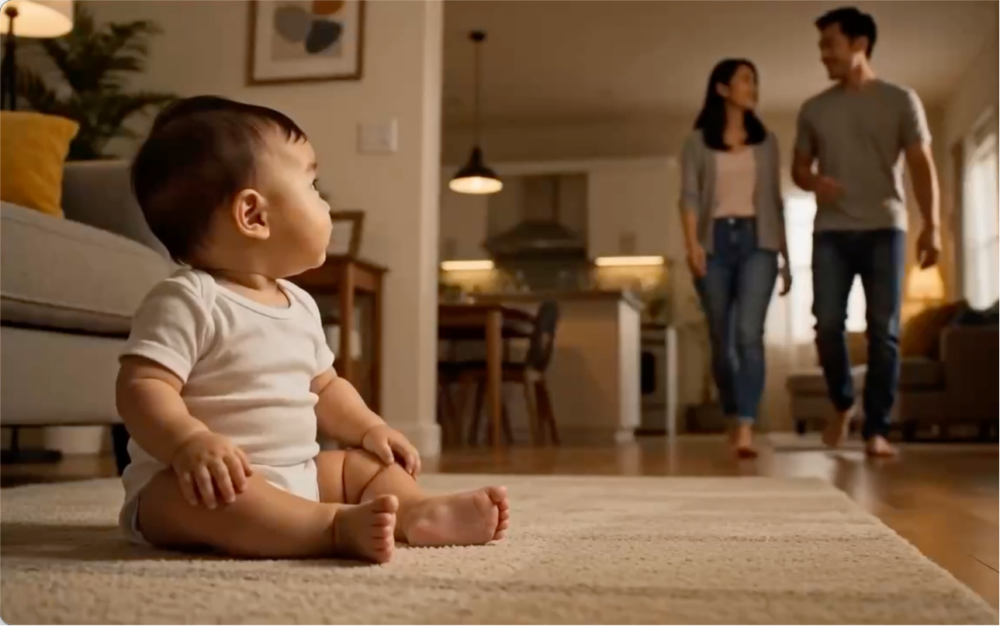
As language, goals, and intention emerge, conscious learning further organizes these observations into causal structure. It abstracts continuous state changes into events and asks what happened, what will happen next, why it happened, and what would happen under intervention. In this sense, unconscious learning provides dense world experience, while conscious learning turns that experience into causal patterns that can be reasoned about and communicated.
We therefore use two complementary learning modes. Unconscious learning absorbs natural dynamics from continuous visual experience, allowing the model to learn dense state transitions and physical regularities without explicit task labels. Conscious learning introduces language, events, instructions, and questions as semantic conditions, allowing the model to learn meaningful state transitions associated with causal explanations and task intentions.

Action: using the world state through downstream readouts
Once learned, the world latent can be decoded through different interfaces. This is the practical reason for treating world state as the central representation: the same world latent can support a language readout for explanation and reasoning, a vision readout for prediction and imagination, and an action readout for intervention.
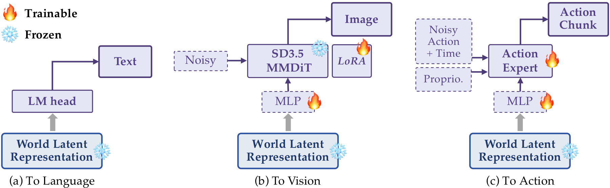
2. World-Learning Resources
World-learning resources
Orca is trained with large-scale world-learning resources designed for Orca's world-learning paradigm: 125K hours of video for dense natural state transitions, 160M event annotations for language-described meaningful changes, and 11.5M VQA examples for question-conditioned state understanding.
| Resource | Scale | Learning role |
|---|---|---|
| Continuous video | 125K hours | Observation signals for dense natural state transitions. |
| Event annotations | 160M events | Reasoning signals for meaningful causal state transitions. |
| VQA examples | 11.5M examples | Cognition signals for question-conditioned world understanding. |
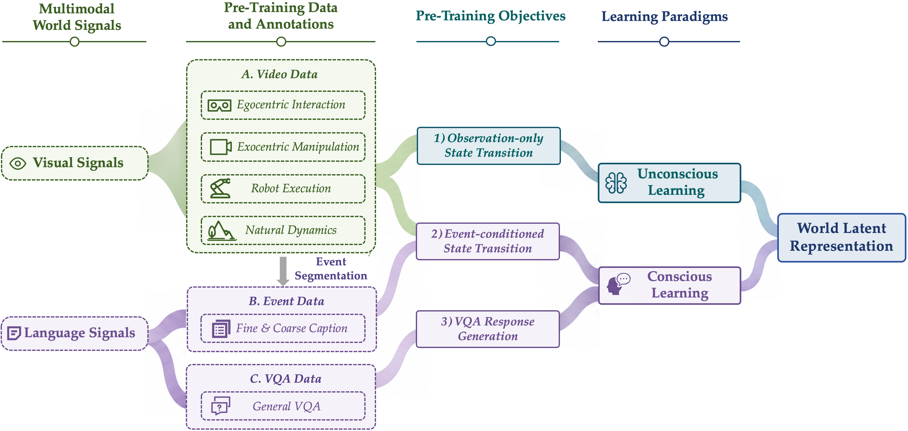
3. Evaluating the World Latent
Question 1: How effective is Orca at scale-up?
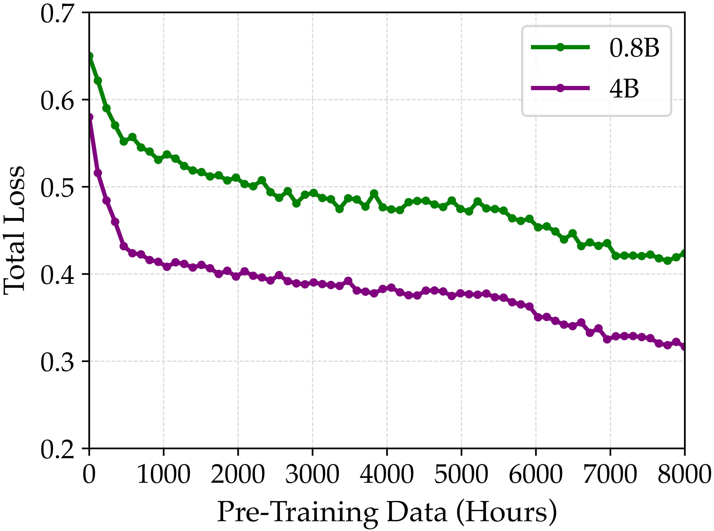
Orca's world-learning objective scales consistently with model and data. As pre-training data grows, world-learning loss continues to decrease, while the larger backbone achieves lower loss than the smaller one. This trend suggests that model capacity is effectively used to absorb richer state-transition structure, making next-state prediction a scalable signal for world learning.
Question 2: How does Orca lead to stronger downstream readouts?

Stronger world pre-training leads to stronger downstream readouts. Since the backbone is frozen during readout training, gains reflect latent space quality directly. Consistent improvements across modalities confirm that scaling world pre-training produces a more useful shared representation.
2.1 To language: text generation
We evaluate Orca's capability of text generation using VQA benchmarks of various perspectives. The results are shown as below.
| Model | Size(B) | Overall | MVBench | TemporalBench | 3DSRBench | SWITCH |
|---|---|---|---|---|---|---|
| World Models (Large size) | ||||||
| V-JEPA 2.1 (+LLaMA3-8B) |
10 | / | 75.4 | 28.5 | / | / |
| Emu3 | 8 | 30.4 | 35.2 | 9.5 | 39.1 | 38.0 |
| Emu3.5 | 34 | 29.8 | 39.5 | 9.5 | 31.3 | 38.9 |
| Vision Language Models (Tiny size) | ||||||
| Qwen3.5 | 0.8 | 31.2 | 52.7 | 19.1 | 14.3 | 38.8 |
| Gemma 4 | 2 | 29.8 | 32.5 | 17.1 | 29.5 | 39.9 |
| SmolVLM2 | 2 | 33.7 | 48.7 | 18.4 | 35.5 | 32.0 |
| MiniCPM-V-4.6 | 2 | 37.9 | 41.4 | 21.2 | 47.7 | 41.2 |
| Orca | 0.8 | 40.8 | 53.6 | 22.6 | 43.4 | 43.7 |
| Vision Language Models (Small size) | ||||||
| DeepSeek-VL2 | 3 | 32.3 | 40.5 | 21.0 | 32.1 | 35.5 |
| Qwen3.5 | 4 | 46.7 | 67.1 | 25.2 | 48.1 | 42.8 |
| Gemma 4 | 4 | 40.8 | 45.6 | 20.2 | 44.8 | 52.4 |
| Orca | 4 | 51.2 | 65.3 | 34.2 | 52.1 | 55.6 |
Orca achieves the best overall performance among 4B-scale small VLMs, outperforming Qwen3.5 and Gemma 4 with the same parameter size. It possesses core advantages in temporal reasoning and spatial perception, and demonstrates exceptional parameter utilization efficiency across different model scales.
Capability Analysis
By aggregating samples associated with each capability dimension across multiple benchmarks and computing the corresponding average success rates, we find that Orca consistently outperforms Qwen3.5 in all four capability dimensions.
| Capability | Qwen3.5 | Orca advantage |
|---|---|---|
| State Transition | 51.86 | 64.13 (+12.27%) |
| Commonsense Reasoning | 57.76 | 62.95 (+5.19%) |
| Spatial Relations | 54.68 | 55.25 (+0.57%) |
| Dynamic Motion | 57.03 | 65.55 (+8.52%) |
State Transition
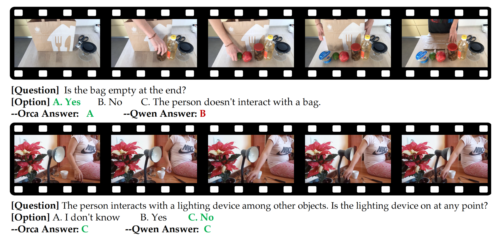
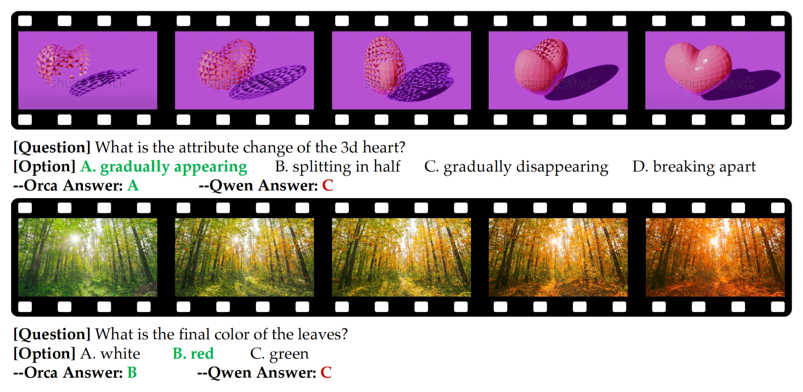
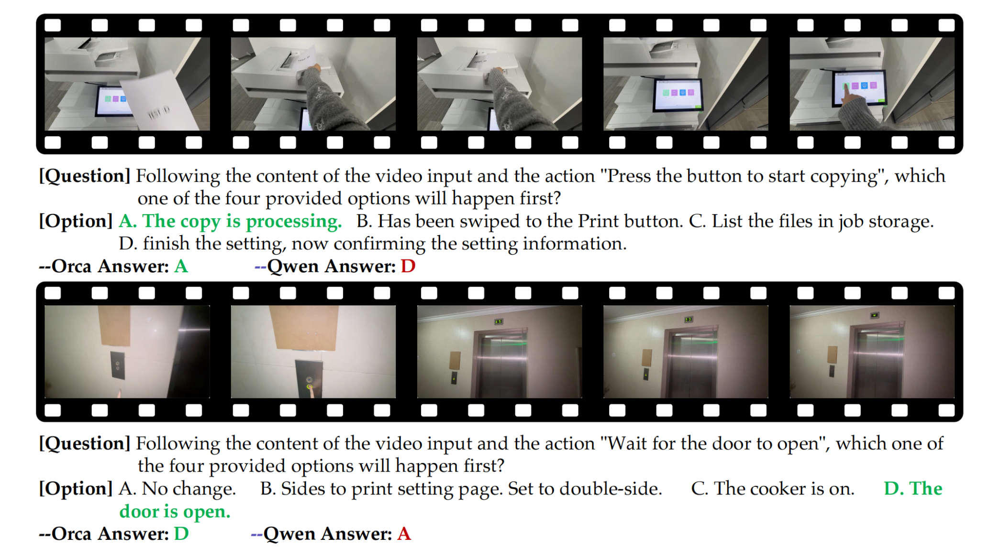
Commonsense Reasoning
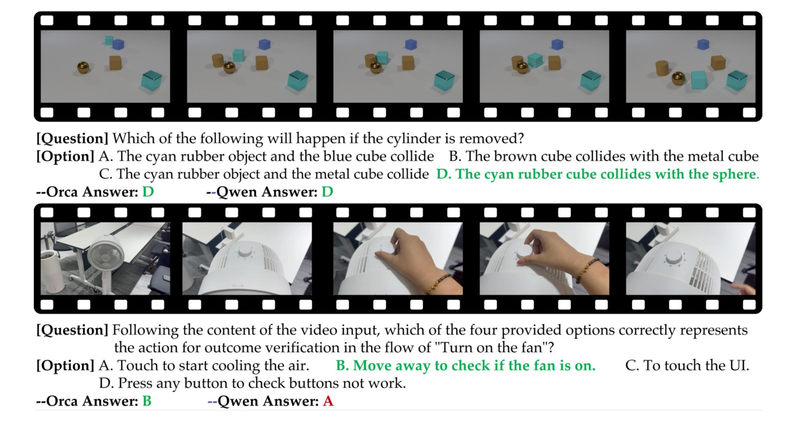
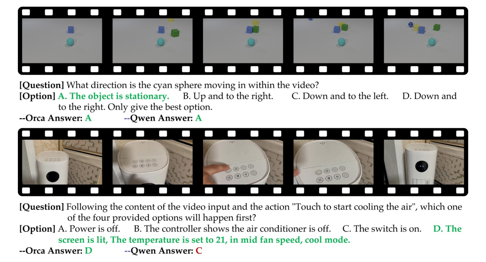
Dynamic Motion
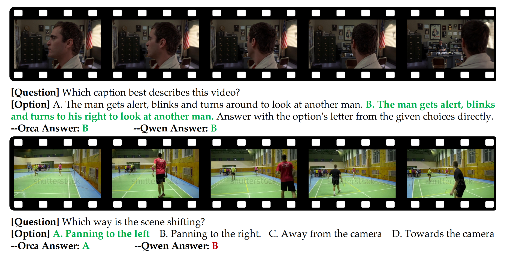
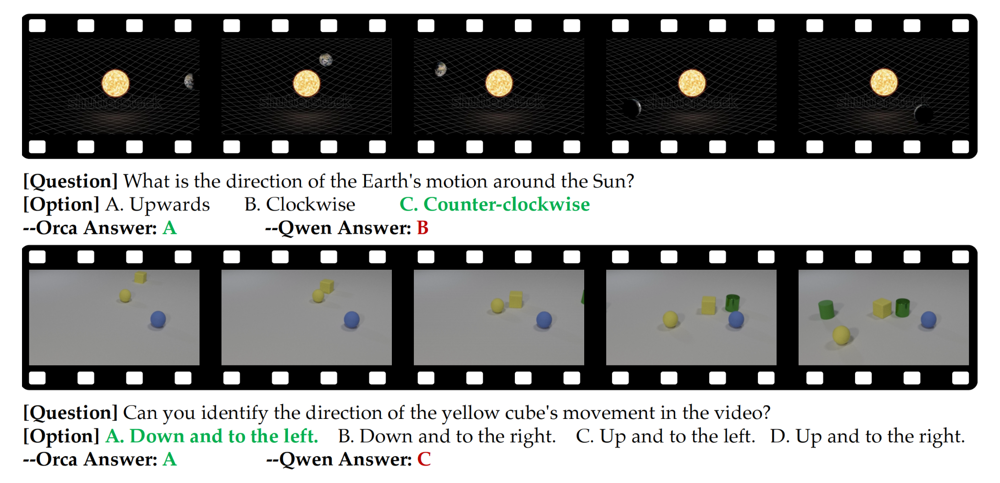
Spatial Relations

By analyzing Orca's performance across individual capability subcategories in all benchmarks, we find that our model achieves substantial gains over the Qwen3.5 backbone in all aspects of state transition, commonsense reasoning, spatial relations, and dynamic motion.
2.2 To vision: image prediction
benchmark
We use PRICE-V0.1 (Prediction of Real-world Interactions with Constraints Evaluation) benchmark to evaluates a model's ability to predict real-world physical state changes. It operates by requiring the model to generate a future state image based on a current image and a language instruction.
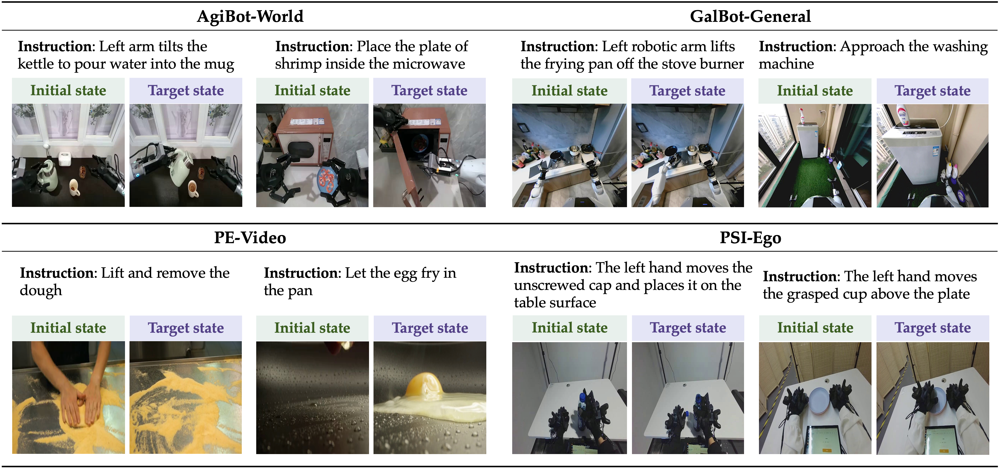
Note: PRICE focuses on physical prediction rather than pure image painting.
RESULTS
| Model | Size (B) | Gemini 3.1 Pro | GPT 5.4 | Doubao-Seed-2.0 | Gemma 4-31B | Avg. |
|---|---|---|---|---|---|---|
| OmniGen2 | 3+4 | 24.6 | 46.8 | 41.4 | 45.5 | 39.6±10.2 |
| FLUX.1-Kontext | 12 | 21.6 | 46.9 | 42.7 | 52.5 | 40.9±13.5 |
| FLUX.2 [klein] | 4+4 | 29.7 | 64.6 | 60.0 | 70.2 | 56.1±18.1 |
| Orca | 0.8+2 | 17.0 | 48.5 | 46.0 | 26.5 | 34.5±15.3 |
| 4+2 | 44.0 | 67.9 | 61.0 | 66.3 | 59.8±10.9 |
case comparison
We compare Orca with other baseline on representative PRICE examples. Green boxes mark typical baseline failures, which Orca better preserves the robot embodiment and other information during interaction.

2.3 To action: action generation
The action generation evaluation uses real robot experiments as an out-of-domain (OOD) benchmark to evaluate embodied task.
settings
We used the dual-arm wheeled robot to collect data on five tasks, including: Take book, Stacked bowls, Pull out tissue, Stamp, and Scoop sugar. Based on these, several OOD experiments were designed, including 3 kinds of Environmental Generalization and 5 kinds of Object Generalization, as shown in the figure below.

results
We use the rule-based score and PRM-as-a-Judge (Ji et al., 2026) as metrics. The rule-based score measures key-stage task completion, and PRM-as-a-Judge provides dense trajectory-level diagnostics, including progress, stagation, failure progress, recovery and overall action quality.
- 1 M25 and M50 are Milestone25% and Milestone50%. They are the proportions of the trajectory reaching 25% and 50%.
- 2 SR is the binary Success Rate. The unit is %.
- 3 MaxP-F is MaxProcess in Failure. It represents the max-level execution process in the failure.
- 4 FNS is Failure Near-Success Score. It measures the progress achieved by failed trajectories before termination.
- 5 RBS is the RoBustness Score. RBS measures overall robustness.
- 6 SQS is the Success Quality Score. It measures the stability, smoothness, and high quality in the success process.
analysis
- According to the table above, Orca’s learning paradigm and learned world latent transfers effectively to action readout in OOD environments.
- Orca consistently advances the task and recovers better from execution errors. The examples are as follows.
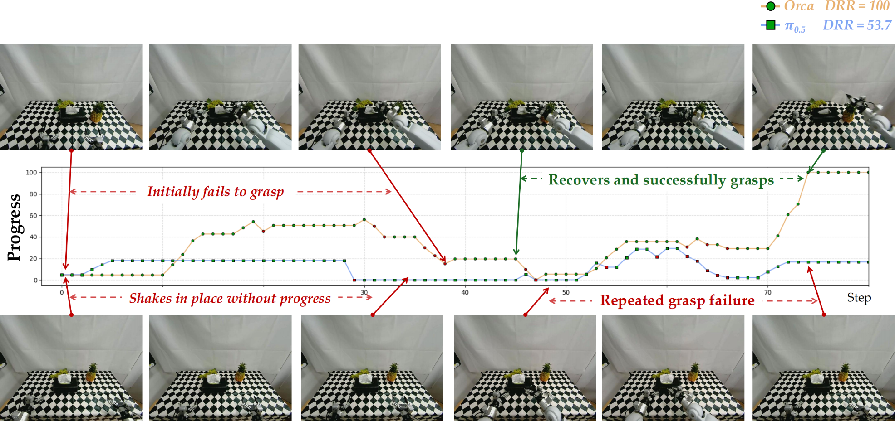
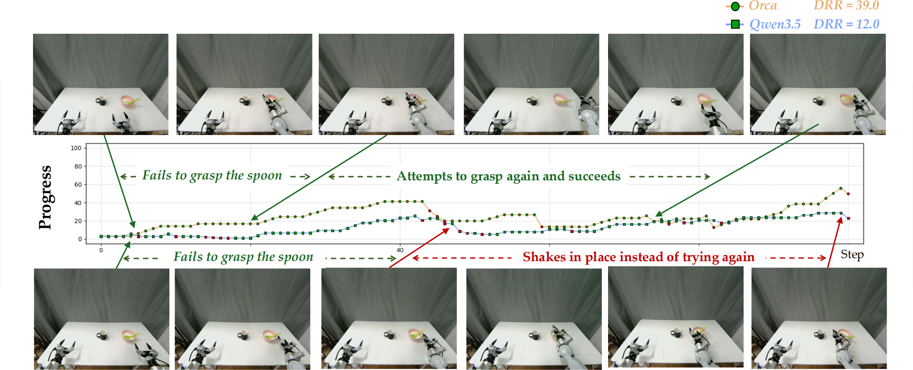
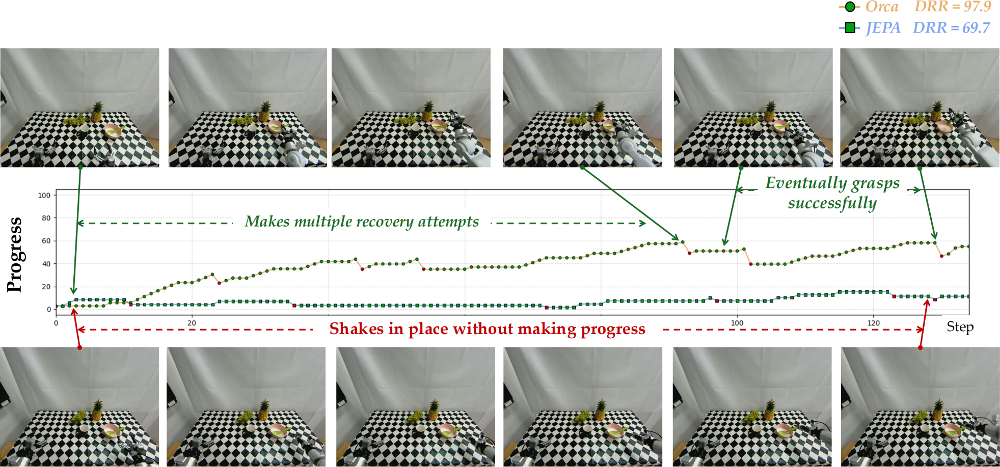
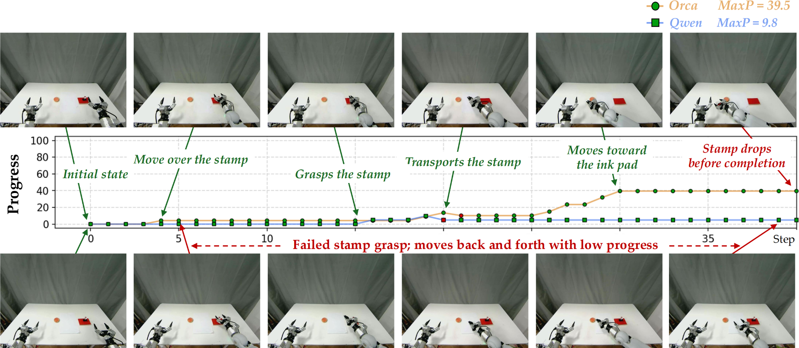
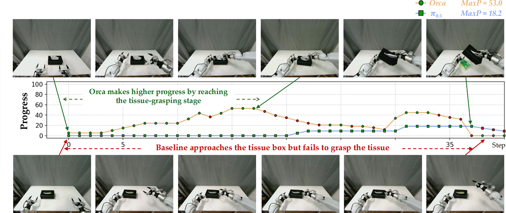
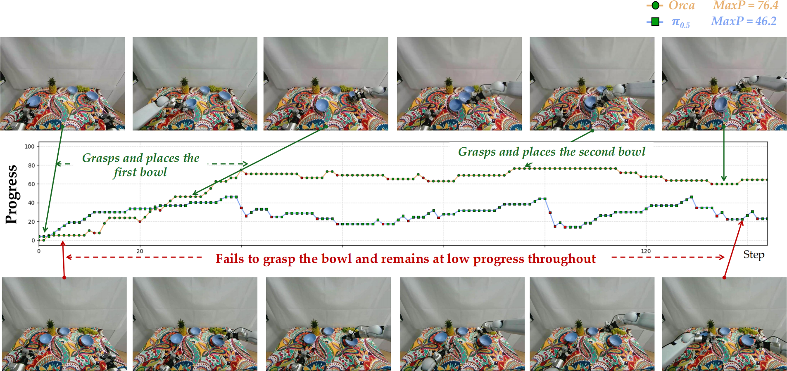
demo trials
A 5-task matrix evaluated across in-domain execution, environment generalization, and object generalization.
Real-Robot Evaluation
Base / In-Domain Tasks
Five core manipulation skills evaluated in their base settings.
Environment Generalization
The same task families under changed tablecloth styles, backgrounds, and distractors.
Object Generalization
Each inference object transfers from its paired training task: book to cutting board, bowls to boxes, tissue to bread, stamp to children's stamp, and sugar to candy.
Citation
Replace this placeholder after the paper, repository, model, and dataset pages are finalized.
@misc{orca_world_model_2026,
title = {Orca: The World is in Your Mind},
author = {Orca Team},
institution = {Beijing Academy of Artificial Intelligence},
year = {2026},
howpublished = {\url{https://github.com/orca-wm/orca-wm.github.io}}
}